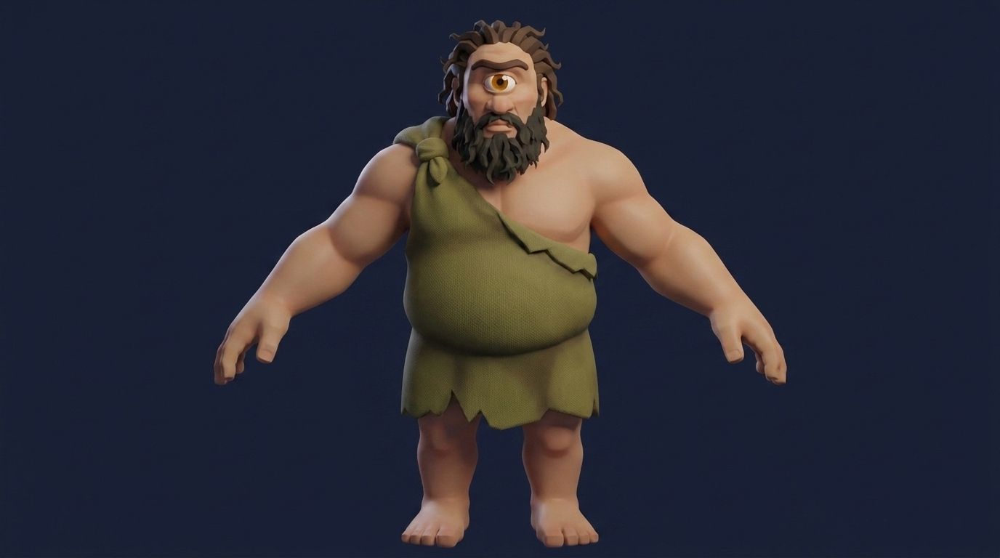
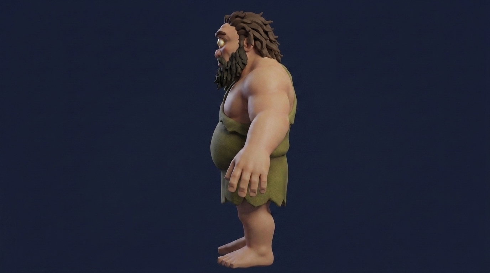

Polyphemus, photographed — the giant on the ledger's own floor
The proven photo-rig recipe pointed at the sealed Polyphemus canonical +
the single-eye cameo: stylize (gemini-3-pro-image i2i, cameo as identity source,
THE EYE gated in every frame — fact O.1) →
turnaround (front passed back as reference; the eye demanded in profile, forbidden in back) →
multiview reconstruction (model_tripo-p1-multiview-to-3d via Scenario) →
auto-rig + banked walk AND idle (model_tripo-rigging-v1, biped) —
set down inside the cave plate at his ledger height: 7 m = 301 px at the
ledger's 43 px/m, four Ulysses tall. His three props — the great bowl, the stake with its
ember-tip material state, the wineskin — are pure code: seeded procedural meshes, $0.
Every count below is read from the delivered files.
he strides in at the mouth, holds at the giant-seat by the blaze (the banked idle),
then rounds the front of the fire and out along the downstage floorbanked biped walk + idle, retargeted at rig time
The posture amendment, on the record. The posture law gates a standing
rig upright (±5°) with walk-cycle head pitch ≤ 12°. Polyphemus' hunch is character —
the stoop lives in the mesh silhouette the same-person gates sealed, and the canonical's own
measured stance is the anchor: the amended gate is standing pitch within ±8° of the
canonical's 0.75° (tools/polystance.py), walk and idle cycles within 12° of that same
anchor. The delivered rig walked 16.4–20.5° bowed (the known low-pelvis defect class); the
same per-key quaternion counter-rotation that saved Ulysses brings it to 1.4–5.6° — his back
stays bent, his head stops staring at the floor.
the turnaround — same-person gated, THE EYE in every face

front · 0° — one amber eye, dead on the midline

left · 90° — the orb bulges on the face's forward line